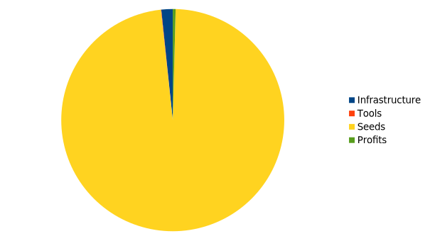

I would remove cut all of the trees and remove all of the plants by mixing them with the top soil, which, once it decomposes, will provide a nutrition boost. This will require renting Tilling machinery for about 2 hours. This will cost about 150$. The wood will be processed by a team of unskilled workers in about a day, requiring heavy machinery with a price of about 250$. The trunk will be sold to a wood processing utility, earning about 2500$. The branches will be used to build a simple fence to protect the farm from pests which could damage the crop.
A small distributor and processing hut was built with a well on the edge taking about 0.05 acres and costing about 8000$. A drip watering system was installed using DIY tools on all of the 1.95acres of land. The price was about 2000$. 0.95 milion corms (seedling) were purchased and planted costing about 593,750$.
